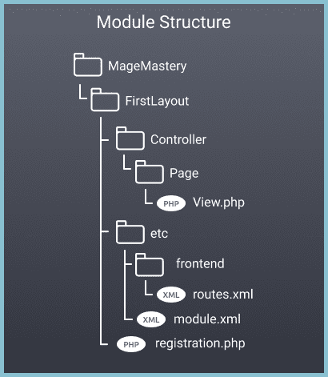
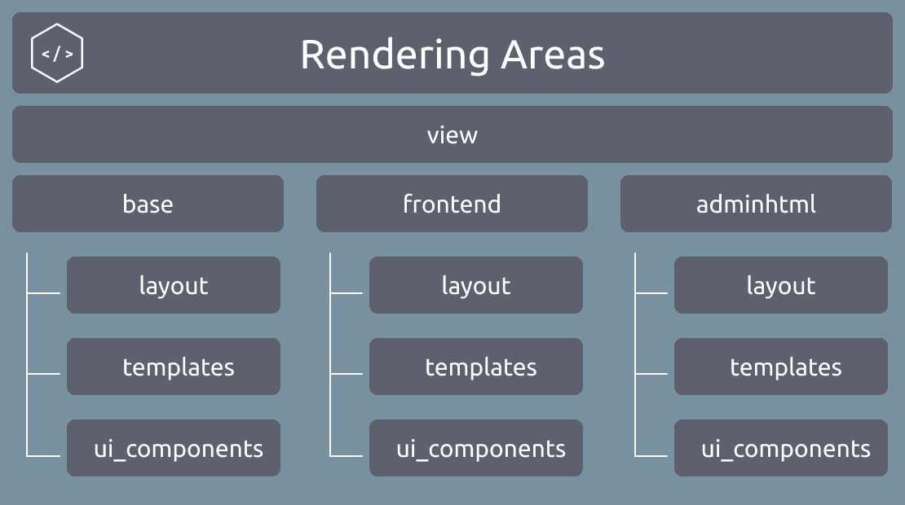
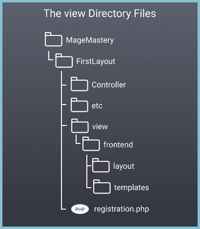
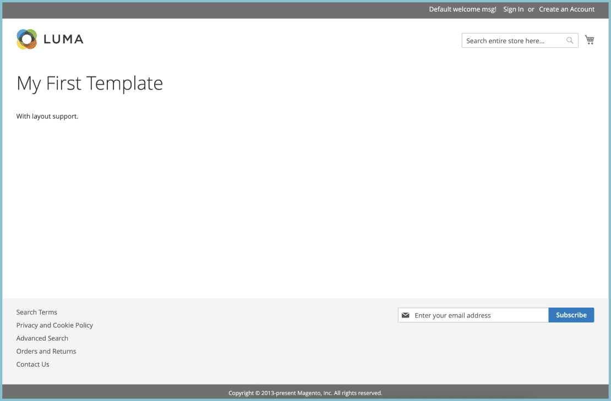

Оригинал
Template and Layout Rendering
Визуализация шаблонов и макетов
Magento 2 provides a powerful mechanism on extending e-commerce functionality with custom templates. It also allows to provide additional pieces of content by utilizing a declarative approach.
Magento 2 предоставляет мощный механизм для расширения функциональности электронной коммерции с помощью настраиваемых шаблонов. Это также позволяет предоставлять дополнительные части контента, используя декларативный подход.
Lesson Overview
Обзор урока
In this lesson we are going to learn the following:
В этом уроке мы узнаем следующее:
How to create a template?
Как создать шаблон?
How to render a template on a custom Magento 2 page?
Как отобразить шаблон на настраиваемой странице Magento 2?
How to add a template via layout configuration file?
Как добавить шаблон через файл конфигурации макета?
Before we begin
Прежде чем мы начнем
Here is the structure of the module, we are going to start with:
Вот структура модуля, с которой мы начнем:
Module Structure Template and Layout Rendering
Шаблон структуры модуля и визуализация макета

For this tutorial, I've created the MageMastery_FirstLayout module with the registration.php and module.xml files. And the module has been successfully registered with the bin/magento setup:upgradeCLI command.
Для этого руководства я создал модуль MageMaster_FirstLayout с файлами registration.php и module.xml. И модуль был успешно зарегистрирован с помощью команды bin/magento setup: upgradeCLI.
The registration.php file:
Файл registration.php:
<?php
use Magento\Framework\Component\ComponentRegistrar;
ComponentRegistrar::register(
ComponentRegistrar::MODULE,
'MageMastery_FirstLayout',
__DIR__
);
The module.xml file:
<?xml version="1.0"?>
<config xmlns:xsi="http://www.w3.org/2001/XMLSchema-instance"
xsi:noNamespaceSchemaLocation="urn:magento:framework:Module/etc/module.xsd">
<module name="MageMastery_FirstLayout" />
</config>
For more information about the module creation and registration, please refer to the previous lesson A Module in Magento 2.
Для получения дополнительной информации о создании и регистрации модуля, пожалуйста, обратитесь к предыдущему уроку Модуль в Magento 2.
In addition to this, I've added a route.xml file with an Action Controller class. These two files allows to access a custom page that has been declared in the MageMastery_FirstLayout module.
В дополнение к этому я добавил файл route.xml с классом Action Controller. Эти два файла позволяют получить доступ к настраиваемой странице, которая была объявлена в модуле MageMaster_FirstLayout.
The routes.xml file content is the following:
Содержимое файла routes.xml следующее:
<?xml version="1.0"?>
<config xmlns:xsi="http://www.w3.org/2001/XMLSchema-instance"
xsi:noNamespaceSchemaLocation="urn:magento:framework:App/etc/routes.xsd">
<router id="standard">
<route id="magemastery_firstlayout" frontName="firstlayout">
<module name="MageMastery_FirstLayout" />
</route>
</router>
</config>
The routes.xml file is located in the MageMastery/FirstLayout/etc/frontend directory. This configuration allows to access a module's controller by using the "firstlayout" URI path of the URL.
Файл routes.xml находится в каталоге MageMaster/FirstLayout/etc/frontend. Эта конфигурация позволяет получить доступ к контроллеру модуля, используя путь URI "firstlayout" URL-адреса.
And the Action Controller class located in the MageMastery/FirstLayout/Controller/Page/View.php file, the content is:
И класс Action Controller, расположенный в файле MageMaster/FirstLayout/Controller/Page/View.php, содержит следующее содержимое:
<?php
declare(strict_types=1);
namespace MageMastery\FirstLayout\Controller\Page;
use Magento\Framework\App\Action\Action;
use Magento\Framework\Controller\ResultFactory;
use Magento\Framework\View\Result\Page;
class View extends Action
{
public function execute()
{
return $this->resultFactory->create(ResultFactory::TYPE_PAGE);
}
}
New Page Type Object
Новый объект типа страницы
From the Create a Page in Magento 2 lesson we've learned how to create a custom page and return a JSON-format data. As you've noticed, there is an instance of the Magento\Framework\View\Result\Page class returned from the execute() method.
Из урока «Создание страницы в Magento 2» мы узнали, как создать собственную страницу и вернуть данные в формате JSON. Как вы заметили, существует экземпляр класса Magento\Framework\View\Result\Page, возвращаемый методом execute().
return $this->resultFactory->create(ResultFactory::TYPE_PAGE);
The idea behind creating a TYPE_PAGE type of a result object is to trigger the Magento 2 rendering mechanism.
Идея создания типа TYPE_PAGE объекта результата заключается в запуске механизма рендеринга Magento 2.
There is a new directory that we've to learn in this lesson. The directory is called view. As we've discussed in the previous tutorial, Magento 2 application uses different configuration areas. It is also applicable for rendering purposes. The frontend and adminhtml are the two areas we can use in order to render a custom content on a Storefront and Admin area accordingly.
В этом уроке нам предстоит изучить новый каталог. Каталог называется представлением. Как мы обсуждали в предыдущем руководстве, приложение Magento 2 использует разные области конфигурации. Это также применимо для целей рендеринга. Интерфейс и adminhtml - это две области, которые мы можем использовать для рендеринга настраиваемого контента на витрине и в области администрирования соответственно.
Rendering areas of a module in Magento 2
Отрисовка областей модуля в Magento 2

There are other files and directories might be located in the view directories, however, this is outside of the lesson. In the upcoming lessons we will learn about different rendering areas and how it can be used to provide different files for different areas.
В каталогах представлений могут находиться другие файлы и каталоги, однако это выходит за рамки урока. В следующих уроках мы узнаем о различных областях рендеринга и о том, как его можно использовать для предоставления разных файлов для разных областей.
In case we want to render something on a Storefront, we have to create a view/frontend directory. Inside this directory, all the files should be added and further to be executed in a frontend area. This happens upon Magento 2 rendering. Inside frontend directory, there are two directories. The layout directory is used to place layout configuration files of the MageMastery_FirstLayout module.
Если мы хотим отобразить что-то на витрине, нам нужно создать каталог view/frontend. Внутри этого каталога все файлы должны быть добавлены и в дальнейшем выполняться в области frontend. Это происходит при рендеринге Magento 2. Внутри каталога frontend есть два каталога. Каталог макета (layout) используется для размещения файлов конфигурации макета модуля MageMaster_FirstLayout.
The templates directory, contains PHTML templates that have to be rendered on a Magento 2 Storefront.
Каталог шаблонов (templates) содержит шаблоны PHTML, которые должны отображаться на витрине Magento 2.
Layout Configuration File
Файл конфигурации макета

The new magemastery_firstlayout_page_view.xml layout configuration file has to be added to the MageMastery/FirstLayout/view/frontend/layout directory.
Новый файл конфигурации макета magemaster_firstlayout_page_view.xml должен быть добавлен в каталог MageMaster/FirstLayout/view/frontend/layout.
<?xml version="1.0"?>
<page xmlns:xsi="http://www.w3.org/2001/XMLSchema-instance"
xsi:noNamespaceSchemaLocation="urn:magento:framework:View/Layout/etc/page_configuration.xsd">
<body>
<referenceContainer name="content">
<block class="Magento\Framework\View\Element\Template"
name="magemastery.first.layout.example"
template="MageMastery_FirstLayout::example.phtml" />
</referenceContainer>
</body>
</page>
The format of the layout file is pretty much similar to all the XML files in Magento 2. The root node
allows to add configuration and templates that have to be rendered on a page.Формат файла макета очень похож на все файлы XML в Magento 2. Корневой узел
позволяет добавлять конфигурацию и шаблоны, которые должны отображаться на странице.In order to add a custom example.phtml template from the view/frontend/templates directory, the XML declaration should be created and added to the layout configuration file.
Чтобы добавить настраиваемый шаблон example.phtml из каталога view/frontend/templates, необходимо создать объявление XML и добавить его в файл конфигурации макета.
There are 3 pieces of information or node arguments have to be declared as part of the block node. Let's have a look at the block declaration example:
Есть 3 части информации, или аргументы узла должны быть объявлены как часть узла блока. Давайте посмотрим на пример объявления блока:
<block class="Magento\Framework\View\Element\Template"
name="magemastery.first.layout.example"
template="MageMastery_FirstLayout::example.phtml" />
The class argument is responsible for providing a Block class name. The Block class is used to render a PHTML template file. The name of the block is magemastery.first.layout.example. The name has to be unique and can be used to reference to a block from the other layout configuration files and templates. For example, the content name or alias of a block is defined in one of the Magento 2 modules. We use the contentblock name to reference and add a block for rendering the example.phtml template file.
Аргумент класса отвечает за предоставление имени класса блока. Класс Block используется для визуализации файла шаблона PHTML. Название блока - magemaster.first.layout.example. Имя должно быть уникальным и может использоваться для ссылки на блок из других файлов конфигурации и шаблонов макета. Например, имя содержимого или псевдоним блока определяется в одном из модулей Magento 2. Мы используем имя блока содержимого для ссылки и добавления блока для рендеринга файла шаблона example.phtml.
The path to a template. It usually includes a name of a module joined with "::" template file name. The example.phtmlfile should be located in the MageMastery/FirstLayout/view/frontend/templates directory. As you may notice, there is no mention in the layout configuration file about the rendering area. However, Magento 2 rendering mechanism knows how to locate the corresponding area of a layout and find a path to the template.
Путь к шаблону. Обычно он включает имя модуля, соединенное с именем файла шаблона "::". Файл example.phtmlfile должен находиться в каталоге MageMaster/FirstLayout/view/frontend/templates. Как вы могли заметить, в файле конфигурации макета нет упоминания об области рендеринга. Однако механизм рендеринга Magento 2 знает, как найти соответствующую область макета и найти путь к шаблону.
As you may notice, there is also no templates directory specified for the template="MageMastery_FirstLayout::example.phtml". In case we want to add a sub-directory inside the templates directory, let's say a view directory, the configuration of the template should include the sub-directory template="MageMastery_FirstLayout::view/example.phtml".
Как вы могли заметить, для template = "MageMaster_FirstLayout::example.phtml" также не указан каталог шаблонов. В случае, если мы хотим добавить подкаталог внутри каталога шаблонов, скажем, каталог просмотра, конфигурация шаблона должна включать подкаталог template = "MageMaster_FirstLayout::view/example.phtml".
The example.phtml file is a simple and static template that provides a few HTML tags.
Файл example.phtml - это простой и статический шаблон, содержащий несколько тегов HTML.
<h1>My First Template</h1>
<p>With Layout support</p>
The content of the example.phtml file is rendered by the Magento\Framework\View\Element\Template class.
Содержимое файла example.phtml отображается классом Magento\Framework\View\Element\Template.
Layout File Name
Имя файла макета
Let's have a look at the layout file name. The magemastery_firstlayout_page_view.xml file name is not an easy-to-guess name. There is some naming convention comes into place.
Давайте посмотрим на имя файла макета. Имя файла magemastery_firstlayout_page_view.xml - нелегко угадать. Возникает некое соглашение об именах.
First of all, a name of the layout file should include the ID of the route. The ID of the route is located in the etc/frontend/routes.xml file. In case of this lesson this is the magemastery_firstlayout ID. The page part of the layout name comes from a name of the controller directory. Finally, the last view path is the name of a controller class, which is View.
Прежде всего, имя файла макета должно включать идентификатор маршрута. Идентификатор маршрута находится в файле etc/frontend/routes.xml. В случае этого урока это magemaster_firstlayout ID. Страничная часть имени макета происходит от имени каталога контроллера. Наконец, последний путь просмотра - это имя класса контроллера, которым является View.
Once, we have a custom controller and we want to render a page with the custom layout. The magemastery_firstlayout_page_view name should be provided. Magento 2 will match the the layout configuration file, load the declared list of templates and classes, and render the content of the template on a page.
Когда-то у нас есть настраиваемый контроллер, и мы хотим отобразить страницу с настраиваемым макетом. Необходимо указать имя magemaster_firstlayout_page_view. Magento 2 сопоставит файл конфигурации макета, загрузит объявленный список шаблонов и классов и отобразит содержимое шаблона на странице.
As the result, we can navigate to the https:\/\/magento2ce.magemastery.net/firstlayout/page/view URL and observe a custom page with the custom content rendered on the page.
В результате мы можем перейти по URL-адресу https:\/\/magento2ce.magemastery.net/firstlayout/page/view и наблюдать настраиваемую страницу с настраиваемым содержимым, отображаемым на странице.

The homework for this lesson.
Домашнее задание для этого урока.
Create a hello.phtml template under the MageMastery/FirstTemplate/view/frontend/template/view directory.
Создайте шаблон hello.phtml в каталоге MageMaster/FirstTemplate/view/frontend/template /view.
Add the template into the magemastery_firstlayout_page_view.xml file as an additional block declaration, that should go after the example.phtml block.
Добавьте шаблон в файл magemaster_firstlayout_page_view.xml в качестве объявления дополнительного блока, который должен идти после блока example.phtml.
Check that the new content of the hello.phtml template is rendered on the page.
Убедитесь, что на странице отображается новое содержимое шаблона hello.phtml.